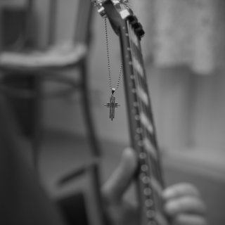
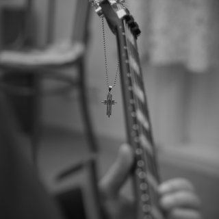
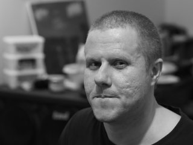
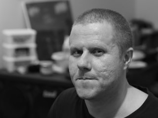
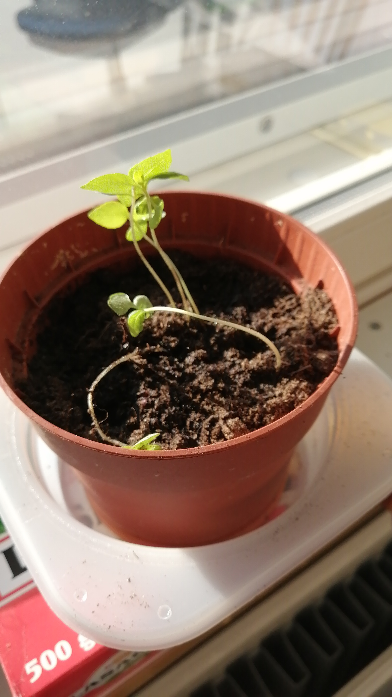
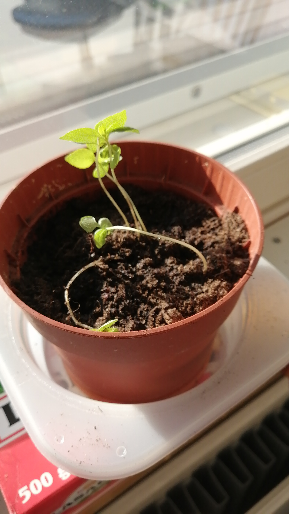

Music
Composing and improvising music are things I like and have invested in.
Sometimes I might play a few chords in a loop and then start improvising riffs,
melodies and solos on it.
I like the painting and sensation of soundscapes more than machine-like technical playing, although I myself have tried to hone the playing technique and ergonomics as functional as possible.
I also invest a lot in sounds because they are part of the soundscape. I try to explore how I can create different impressions with sound and what kind of sound sounds good and alive.

I like the painting and sensation of soundscapes more than machine-like technical playing, although I myself have tried to hone the playing technique and ergonomics as functional as possible.
I also invest a lot in sounds because they are part of the soundscape. I try to explore how I can create different impressions with sound and what kind of sound sounds good and alive.

Picture of my Carvin DC 400 taken by: Amir Adibi - Instagram: @adibiphoto
Sports
I try to play sports in many ways.
However, not because it is somehow mandatory, but I try to find some kind of counterbalance
to it in everyday life. At the moment, I wish I might be in a slightly better shape, but on
the other hand, I try to accept the situation and live by it. I have run a half marathon and
my best time was exactly 2 hours. Not a peak time but I'm pretty happy with it.
In the winter I like to ski whenever possible.
During the summer, I try to go snorkeling whenever I have time
(Finnish summer is short).
I have also tried some martial arts but right now I don’t have the time for them and my condition isn’t quite the kind that I can handle an active workout.
In the winter I like to ski whenever possible.
During the summer, I try to go snorkeling whenever I have time
(Finnish summer is short).
This video is filmed by my old GoPro 2
I have also tried some martial arts but right now I don’t have the time for them and my condition isn’t quite the kind that I can handle an active workout.
Reading & Movies
Reading has been a way for me to make imaginative journeys and possibly learn something new about
life and humanity. I have read from Umberto Eco e.g. The Name of the Rose, Foucault's Pendulum,
Baudolino and The Island of the Day Before.
I have read a lot of books from Kurt Vonnegut. I like his sarcastic black humor. My favorite works were Titan’s Sirens, Cat’s Cradle and Slaughterhouse 5.
I’ve watched so many movies that I don’t even make any lists of them. I usually watch movies on a whim, but I'm familiar with e.g. To the films of Akira Kurosawa, Federico Fellini and Andrei Tarkowski. Sometimes I also like analyzing movies.

I have read a lot of books from Kurt Vonnegut. I like his sarcastic black humor. My favorite works were Titan’s Sirens, Cat’s Cradle and Slaughterhouse 5.
I’ve watched so many movies that I don’t even make any lists of them. I usually watch movies on a whim, but I'm familiar with e.g. To the films of Akira Kurosawa, Federico Fellini and Andrei Tarkowski. Sometimes I also like analyzing movies.

Picture of me taken by: Amir Adibi - Instagram: @adibiphoto
Plants...
This is a pretty new hobby for me.
In the spring I put basil seeds and garden lovage seeds in the soil.
In addition to those I had bought sage seedling.

The germination box unfortunately dripped and I lost most of the basils and garden lovages. The picture shows the surviving basilicas, one of which I have yet to remove.

A picture from my phone's memory
The germination box unfortunately dripped and I lost most of the basils and garden lovages. The picture shows the surviving basilicas, one of which I have yet to remove.